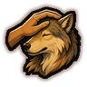
Canine Bond C
Bond with a tamed dog (or any other canine your colony owns). The dog becomes this ninja's partner and fights with the clan techniques.
| Rank | Chakra | Cooldown | Class level |
|---|---|---|---|
| C | 10 | 42 s | 1 |
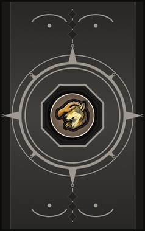

Bond with a tamed dog (or any other canine your colony owns). The dog becomes this ninja's partner and fights with the clan techniques.
| Rank | Chakra | Cooldown | Class level |
|---|---|---|---|
| C | 10 | 42 s | 1 |
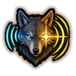
While on: sharper hearing and sight, harder to catch off guard.
| Rank | Chakra | Cooldown | Class level |
|---|---|---|---|
| C | 0.12/s | 0 s | 1 |
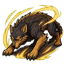
Drop into a beast stance: faster, harder to hit and better at landing blows for about an hour.
| Rank | Chakra | Cooldown | Class level |
|---|---|---|---|
| C | 25 | 42 s | 2 |
| B | 35 | 42 s | 9 |
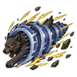
Spin like a drill along a line, tearing into everyone in the way. From Double Piercing Fang on, a bonded dog spins alongside and everyone in the way is hit once more for each.
| Rank | Chakra | Cooldown | Class level |
|---|---|---|---|
| C | 20 | 15 s | 3 |
| C | 25 | 15 s | 6 |
| B | 40 | 15 s | 10 |
| A | 60 | 15 s | 15 |
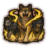
The user and every bonded dog on the map fight as a pack for about an hour.
| Rank | Chakra | Cooldown | Class level |
|---|---|---|---|
| B | 30 | 83 s | 7 |
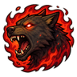
Drive every bonded dog on the map into a rage: harder bites, half the pain, for about half an hour.
| Rank | Chakra | Cooldown | Class level |
|---|---|---|---|
| C | 25 | 83 s | 5 |
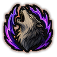
A bloodcurdling howl: enemies within eight cells flinch and are shaken (worse aim, slower) for half a minute.
| Rank | Chakra | Cooldown | Class level |
|---|---|---|---|
| B | 30 | 50 s | 8 |
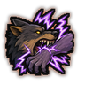
A savage bite that locks the target's muscles for two seconds.
| Rank | Chakra | Cooldown | Class level |
|---|---|---|---|
| B | 20 | 15 s | 7 |
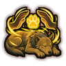
Bring a dog back to life, if it died within the last day.
| Rank | Chakra | Cooldown | Class level |
|---|---|---|---|
| B | 60 | 1000 s | 9 |
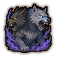
Ninja and bonded dog fuse into a giant wolf for about a minute: both hit far harder, take less damage and move faster. The dog is pulled to the user's side.
| Rank | Chakra | Cooldown | Class level |
|---|---|---|---|
| B | 80 | 250 s | 11 |
| S | 110 | 250 s | 18 |